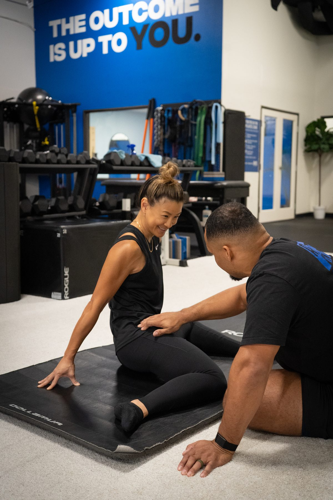
Train smarter. Move better.
Build a body that lasts.
We don't just train you. We rebuild how you move.
IMS is a private mobility-first strength studio in Scripps Ranch, San Diego — built for adults who want to stay strong, capable, and active for the long run. Joint-first coaching, assessment-led programming, and a recovery system designed to keep you adapting.
The pillars behind every IMS program.
Joint-first coaching
Every session begins with the joints — Controlled Articular Rotations and FRC mobility prep before any load. Joints get prepared, not bypassed. Most gyms skip this entirely.
Private studio environment
No crowded floor. No waiting for racks. No judgment. You train in a space built around your session — not around membership volume.
Assessment-led programming
Every program starts with a 30-minute movement assessment. Your plan is built from what your body actually does — not a template and not a guess.
Built for the long game
The work isn't a 12-week sprint. It's strength that compounds, mobility that lasts, and a body that still moves well at 50, 60, 70.
For Adults Who Want to Move Better for Life
IMS works with adults across a wide range of ages and backgrounds — from active professionals and parents to athletes, business owners, and older adults who want to stay strong, mobile, and independent. The goal is not to train like everyone else. The goal is to build the strength, control, and confidence your body needs for the life you actually live.
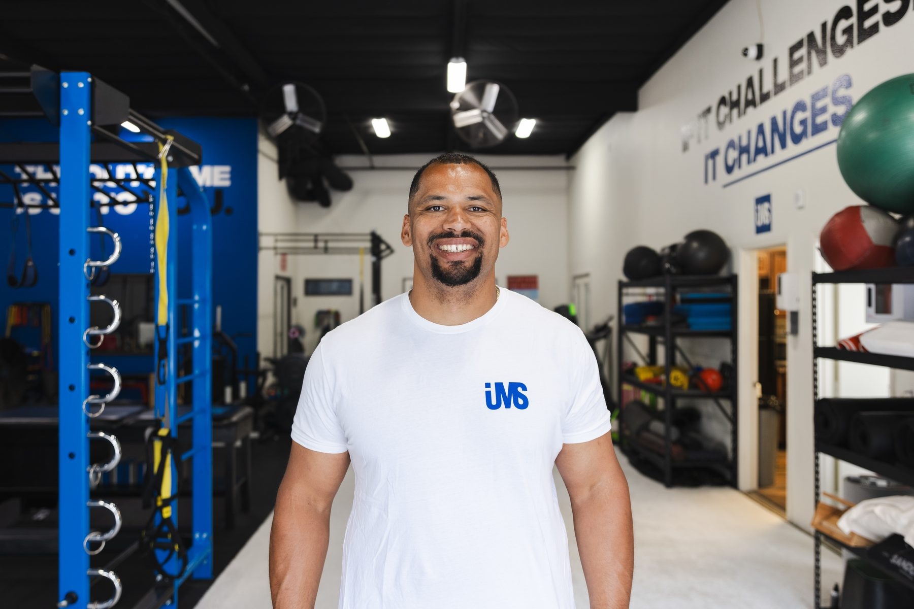
- FRC — Functional Range Conditioning
- FRA — Functional Range Assessment
- Kinstretch
- FRC-ISM — Integrated Systems
Most adults do not need more random workouts. They need a smarter system.
I founded IMS on one belief: most adults do not need more random workouts — they need a smarter system.
My background started in strength training, sports performance, and movement coaching, but the turning point came when I realized how many people were working hard without actually improving the way their body moved. They were stretching, lifting, modifying, and pushing through — but still dealing with the same stiffness, pain, or limitations.
IMS was built to solve that problem differently. We start with joint health, movement quality, and control. Then we build strength on top of that foundation.
That means your program is not based on trends, templates, or punishment. It is based on what your body can actually access and what it needs next.
I work primarily with adults who want to stay strong, capable, and active for the long run. Whether your goal is to get out of pain, rebuild confidence, improve mobility, or train without feeling beat up, the process starts the same way: assess first, coach with intent, and build a body that lasts.
I hold certifications in Functional Range Conditioning (FRC), Functional Range Assessment (FRA), Kinstretch, and FRC-ISM — among the most rigorous credentials in this space. They represent thousands of hours of work, not a weekend seminar. More importantly, they shape every assessment, every program, and every session inside the studio.
IMS lives at 10625 Scripps Ranch Blvd, Suite D, San Diego, CA 92131. The best first step is the free Movement Assessment — 30 minutes, no workout, no pressure. Just a clear picture of where your body is and what it needs next.
What the letters actually mean.
These aren't weekend certifications. Each is a rigorous, ongoing study of how the human body moves — and how to coach it.
Functional Range Conditioning
A joint-by-joint system for building end-range strength and active control. The foundation of every IMS warm-up and program.
Functional Range Assessment
A standardized way to measure joint mobility and pinpoint the real source of restrictions. The starting point of every assessment.
Kinstretch
A coaching method for teaching active control through full ranges of motion. Powerful for clients with stubborn, long-standing restrictions.
Integrated Systems
The applied layer — how FRC principles integrate into real strength training, conditioning, and recovery programming.
Four steps. Built around how the body works.
Joint Preparation
CARs and FRC mobility prep before any load. Joints come first.
Strength Development
Progressive, controlled, individualized — built on capacity you've earned.
Programming & Progression
The plan adapts as you do. Volume, intensity, and selection evolve.
Recovery & Restoration
Recovery isn't optional — it's part of every program at IMS.
A private space — not a gym floor.
Built for focused work, intelligent loading, and serious recovery. Members get the whole environment — coaching floor, recovery room, and quiet spaces — without ever sharing attention.
Quiet, focused, built around the work.
Adjustable benches, squat racks, free weights, plate-loaded cables. No foot traffic, no waiting, no music wars. The room is designed to disappear so the work can land.
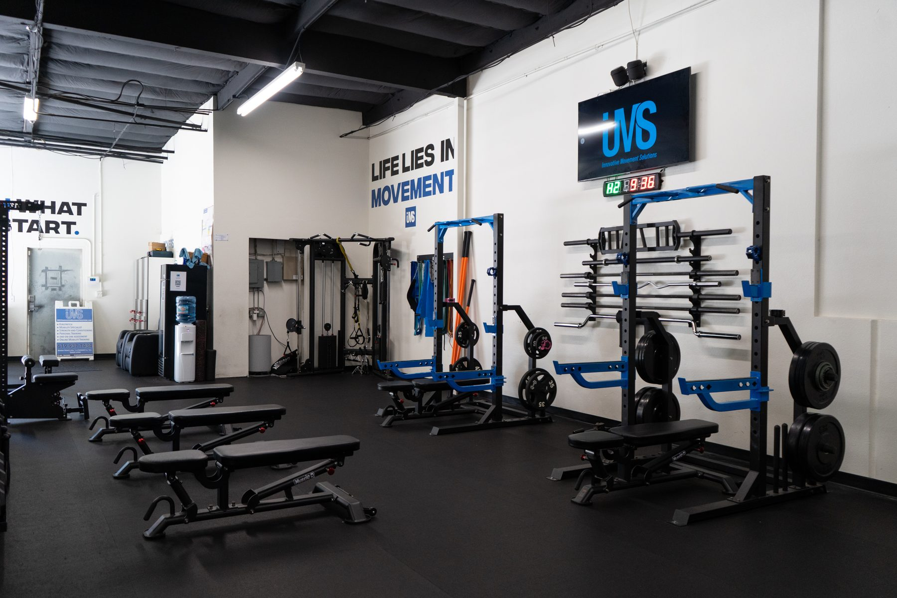
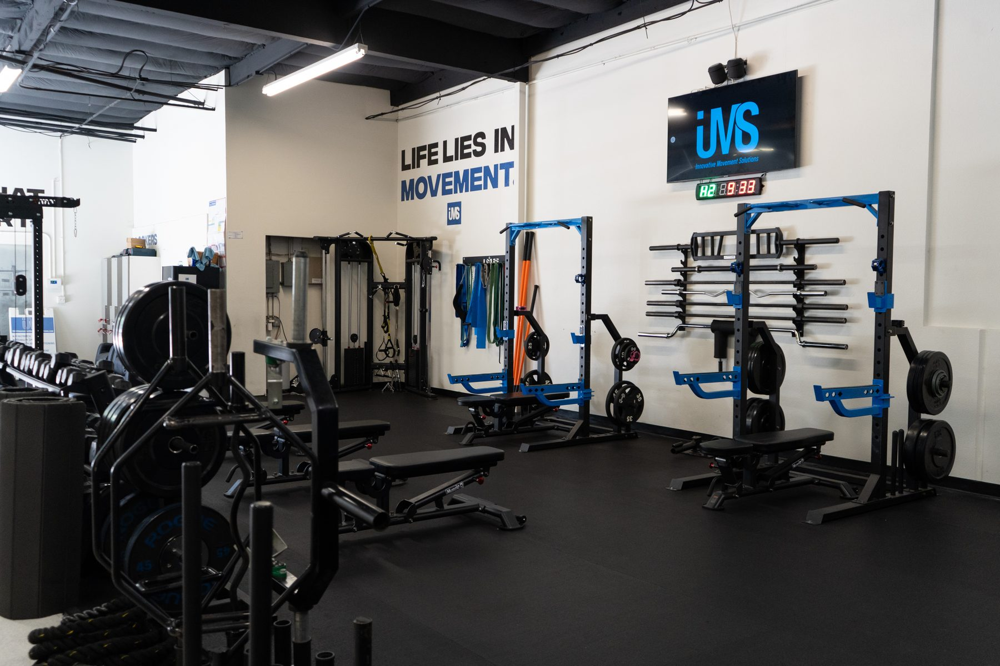
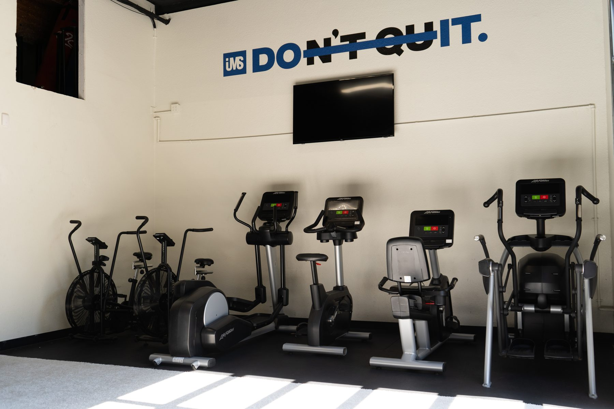
Recovery isn't a reward — it's part of the program.
Normatec compression. Sunlighten infrared sauna. HigherDose PEMF mat. Hyperice percussion tools. Vibration plate. Members access the room unlimited; non-members can drop in for $25 or join the $125/month all-access pass.
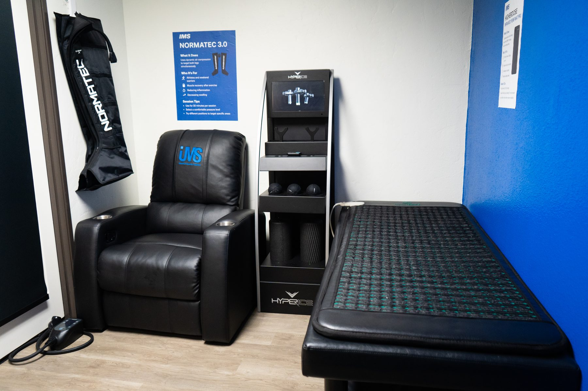
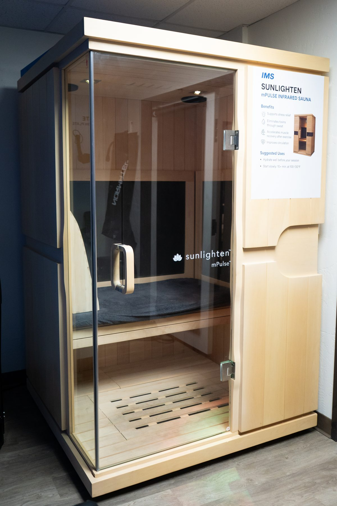
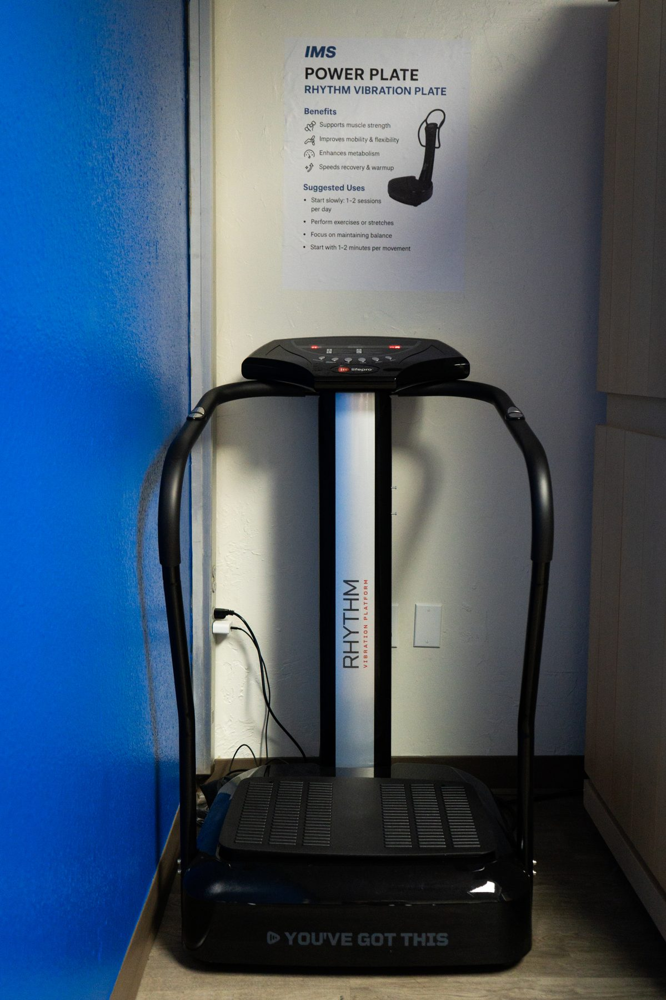
Spaces within the IMS facility.
The IMS studio also houses independent practitioners — Pilates, massage therapy, and chiropractic — who run their own practices from rooms within the facility. These are independent services, not IMS coaching, but they're part of the broader environment members get to be around.
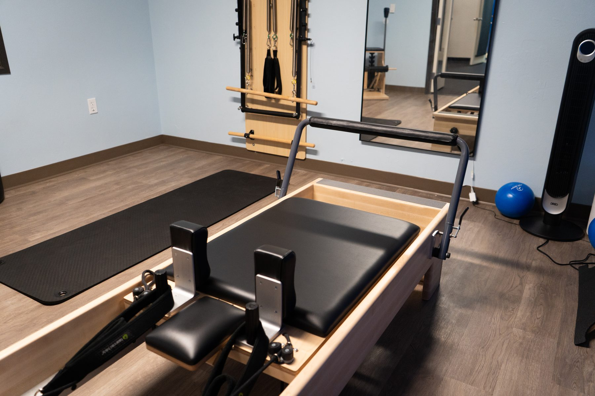
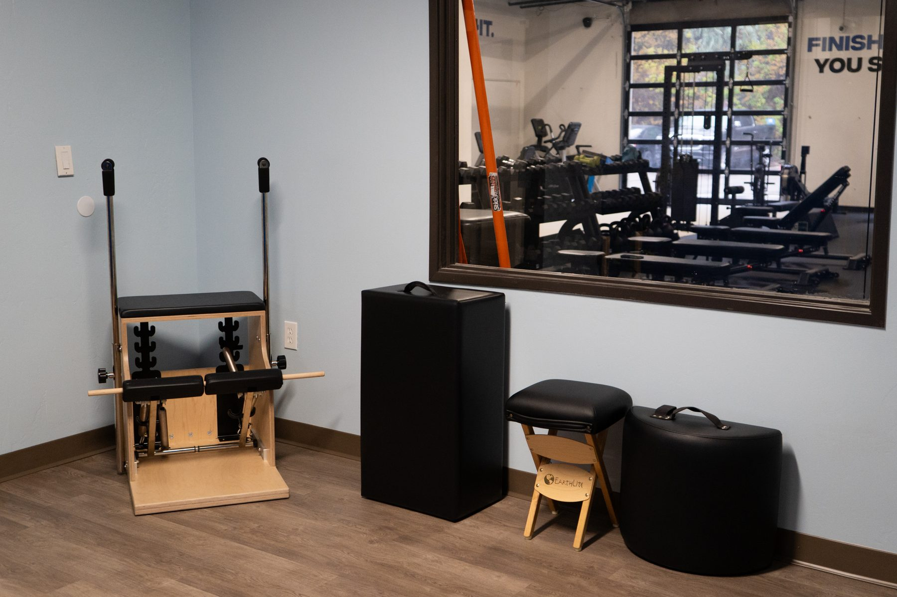
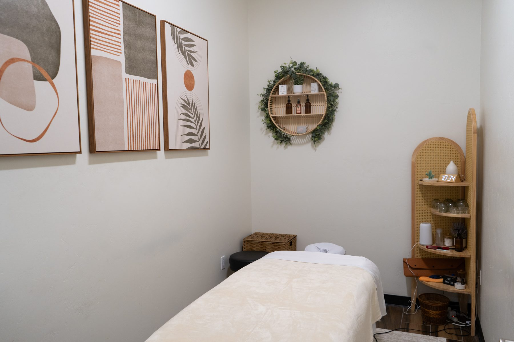
"I had a muscle and joint issue so painful it impacted my daily life — sleep, exercise, everything. Jason identified it immediately and within weeks I was back to normal. He is truly exceptional."
Google Review · Resolved chronic pain — weeks, not months
Unedited, unsolicited review from Google.
Start with a free Movement Assessment.
30 minutes. No workout. No commitment. Just a clear picture of where your body is and what the right next step looks like.